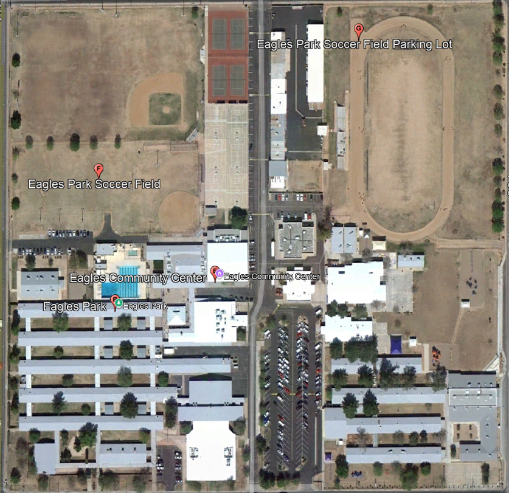

Back to Menu
Mesa Junior High School Fun Facts
Established: 1953
Closed: 2012
Demolished: 2014
Grade: 7-9
Mascot: Eagles
Elementary Schools's Feeder Patterns: Holmes, Keller, Lincoln, Lindbergh, Longfellow, and Lowell
High School's Feeder Pattern: Mesa High School
Fun Facts!
In Mesa High School Boundaries, Holmes, Lowell, and Lincoln will feed into Kino while Keller and Lindbergh will feed into Taylor. However, the only school will feed into Poston is Longfellow.
To look school boundaries, go to:
MPSAZ Boundaries